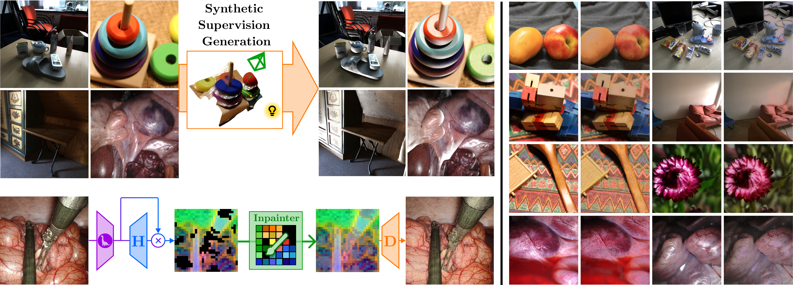
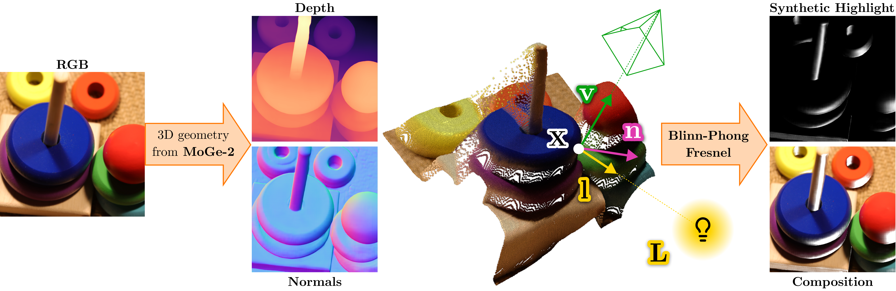
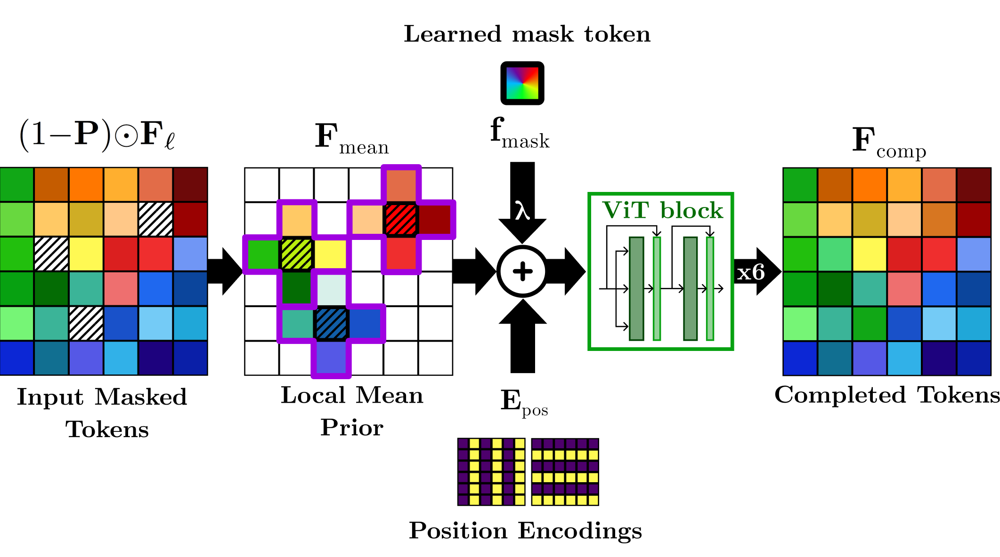
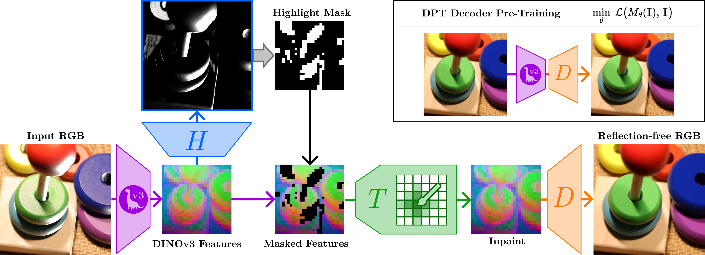
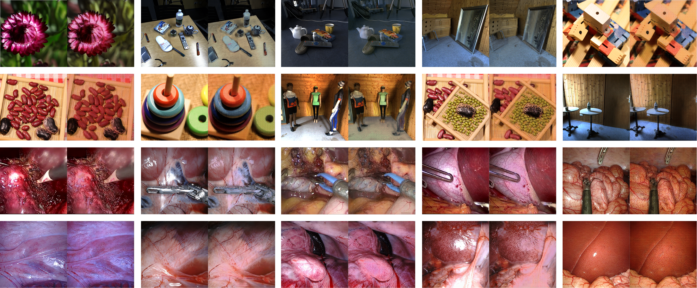
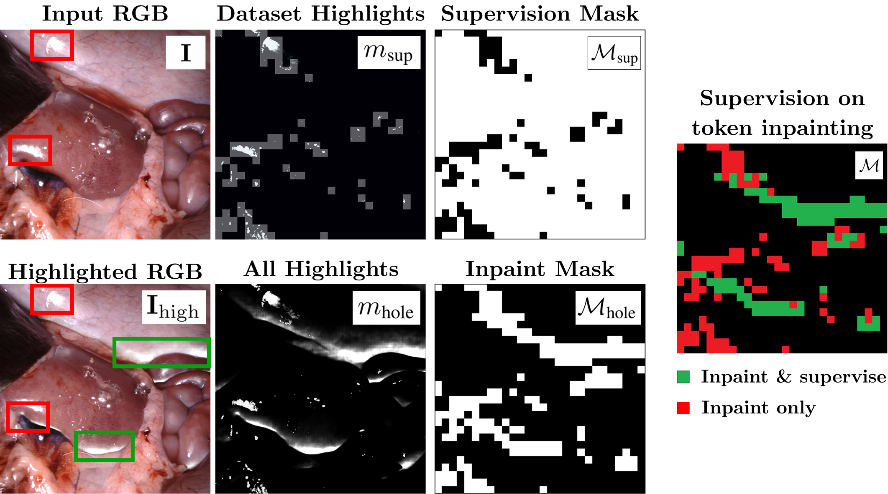

Abstract
Specular highlights distort appearance, obscure texture, and hinder geometric reasoning in both natural and surgical imagery. We present UnReflectAnything, an RGB-only framework that removes highlights from a single image by predicting a highlight map together with a reflection-free diffuse reconstruction. The model uses a frozen vision transformer encoder to extract multi-scale features, a lightweight head to localize specular regions, and a token-level inpainting module that restores corrupted feature patches before producing the final diffuse image. To overcome the lack of paired supervision, we introduce a Virtual Highlight Synthesis pipeline that renders physically plausible specularities using monocular geometry, Fresnel-aware shading, and randomized lighting which enables training on arbitrary RGB images with correct geometric structure. UnReflectAnything generalizes across natural and surgical domains where non-Lambertian surfaces and non-uniform lighting create severe highlights and it achieves competitive performance with state-of-the-art results on several benchmarks.


Physically-Grounded Specular Synthesis
A monocular geometry-aware pipeline based on MoGe-2 that renders Fresnel-modulated specularities from stochastic point-light sources. This enables robust supervision on unaligned RGB imagery by synthesizing physically plausible training pairs without requiring diffuse ground truth.

Latent Token-Space Inpainting
A transformer-based architecture designed to reconstruct specularly-corrupted patch tokens directly within the DINOv3 latent space. By leveraging long-range dependencies, the model recovers original diffuse features while maintaining global semantic consistency.

Foundation Model Integration
Harnessing frozen DINOv3 Vision Transformer backbones to extract high-level semantic priors. This integration provides invariant features that ensure zero-shot generalization across diverse lighting conditions and non-Lambertian material properties.

Cross-Domain Robustness
Proven efficacy across disparate visual domains, from unstructured natural scenes to endoscopic surgical environments. The framework effectively suppressed highlights in complex light-matter interactions where conventional methods degrade.

Unified Supervision Framework
A training strategy combining synthetic highlight rendering with multi-scale loss functions. By integrating token-level and image-level supervision, the model ensures precise highlight localization and seamless diffuse reconstruction.
Citation
@InProceedings{Rota_2026_CVPR,
author = {Rota, Alberto and Kiray, Mert and Karaoglu, Mert Asim and Ruhkamp, Patrick and De Momi, Elena and Navab, Nassir and Busam, Benjamin},
title = {UnReflectAnything: RGB-Only Highlight Removal by Rendering Synthetic Specular Supervision},
booktitle = {Proceedings of the IEEE/CVF Conference on Computer Vision and Pattern Recognition (CVPR)},
month = {June},
year = {2026},
pages = {241-250}
t}